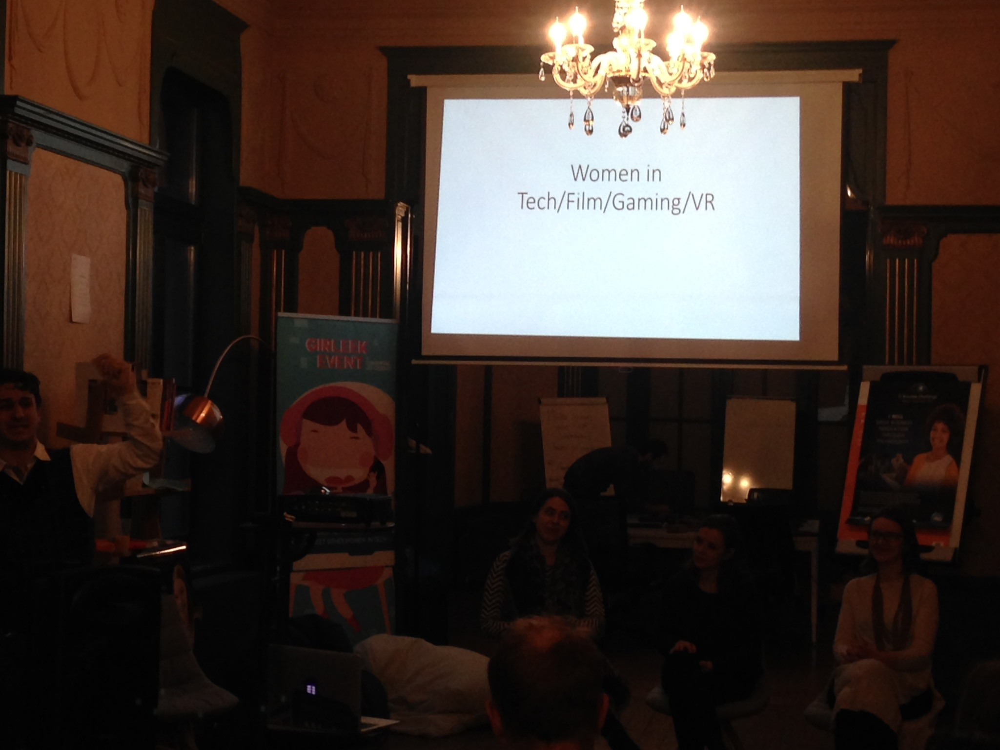
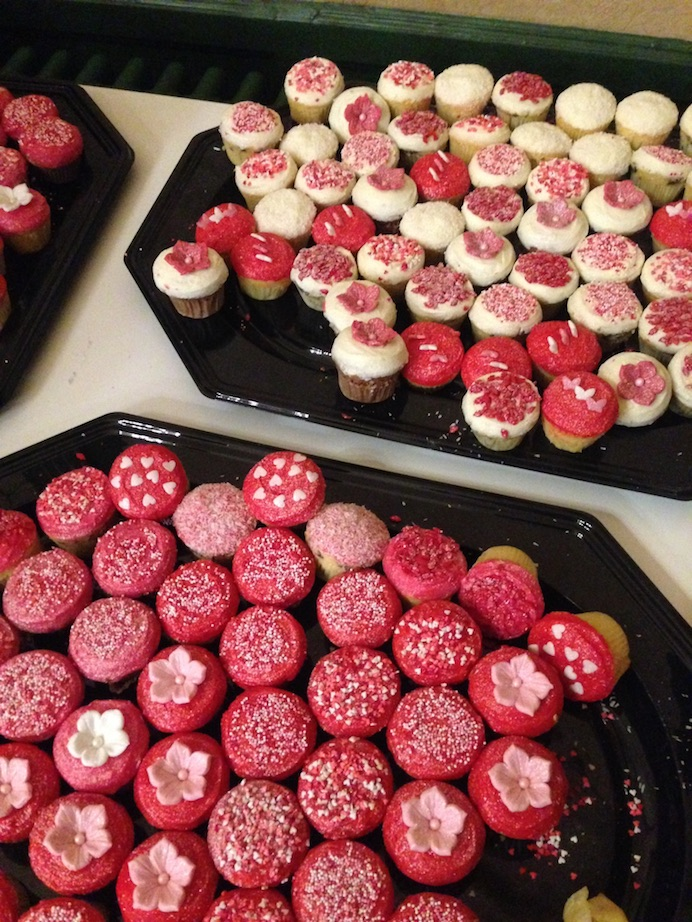
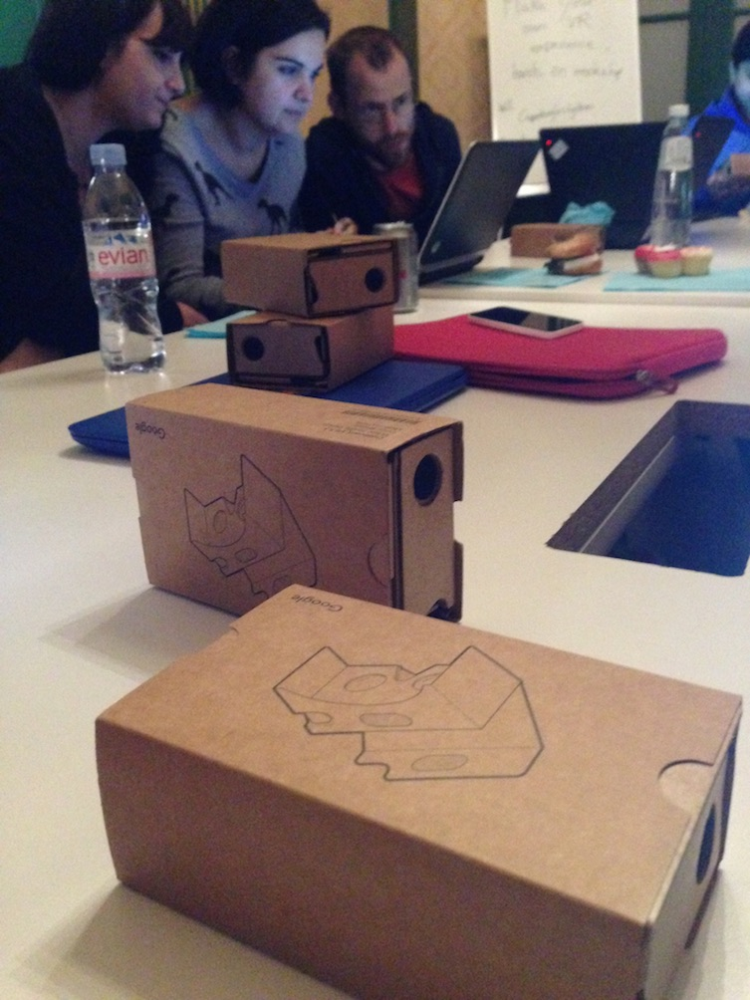

Women in Tech/VR/Filming/Gaming
The cool people at Coworking Les Galleries, in Brussels, organized another GirlLeek event related to the inclusion/performance of women in technology, virtual reality, filming and gaming industry.
This event had a great panel where four beautiful and brave women (involved in this industry) that were interviewed by an expert in filming.

I would like to highlight some ideas:
- what is stopping women to be involved in this industry?
- gaming industry for a women?
Many women seem to be “scared” to be involved in this industry, a common answer on tech interviews is: “I don’t know if I can do this”. This lack of confidence produces that many women stop their careers in tech and others don’t even start it.
Ioana() mentioned that as women, we want to control everything and we want to be 120% sure that we can do something in this field, but!!! sometimes (or most of the times) we should take risks and learn on the journey.
Another speaker, who currently is leading a gaming company, told us that in her journey she has found different funny interesting things, for example… once she went with her husband to a conference where she was supposed to explain something about her business, and when they arrived to the place, she was asked to be seat so they can listen to her husband… and wrong!!! she was the one to give the presentation! haha!
They always have great snack!
Also! We put hands on in VR!
They always have great snack!
More info about this, here